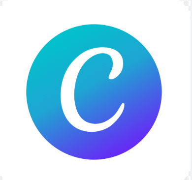
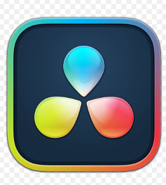
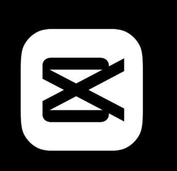
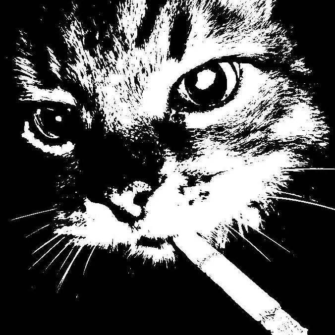

Direção visual
Designer Gráfico
Identidades visuais, campanhas, peças digitais, projetos editoriais, apresentações e direção de arte.
Design · Estratégia · Marketing · Conteúdo · Audiovisual
Transformo ideias em estratégias, identidades, conteúdos e experiências capazes de informar, conectar e gerar resultados.
Ver projetos ↘Quem sou
Desenvolvo projetos que conectam
Atuo na interseção entre comunicação, criação e estratégia, desenvolvendo projetos que integram design, redação, copywriting, marketing, produção de conteúdo, social media e audiovisual de forma coesa e orientada a resultados.
Como escritora e autora publicada pela Amazon, trago à minha prática um repertório narrativo que contribui para a criação de conceitos, roteiros e conteúdos com mais identidade, sensibilidade e profundidade.
Design, web design, social media e audiovisual
Marketing, posicionamento e planejamento
Redação, copywriting, jornalismo e escrita
Perfil multidisciplinar
Direção visual
Identidades visuais, campanhas, peças digitais, projetos editoriais, apresentações e direção de arte.
Planejamento
Construção de posicionamento, planejamento de comunicação e desenvolvimento de estratégias para marcas e projetos
Escrita profissional
Produção de textos institucionais, editoriais, roteiros, artigos, conteúdos digitais e materiais de comunicação.
Conversão
Textos publicitários, campanhas, páginas, chamadas, legendas e conteúdos orientados para ação e conversão.
Jornalismo
Pesquisa, apuração, entrevistas e produção de conteúdos jornalísticos claros, relevantes e bem estruturados.
Produção autoral
Autora de obra publicada pela Amazon, com experiência em narrativa, escrita criativa e desenvolvimento de universos.
Presença digital
Planejamento editorial, criação de conteúdo, campanhas e desenvolvimento da presença digital de marcas.
Audiovisual
Captação, cobertura de eventos, edição de vídeos, reels e conteúdos audiovisuais para diferentes plataformas.
Negócios e comunicação
Planejamento de campanhas, comunicação, análise de público, posicionamento e ações orientadas para resultados.
Experiência digital
Criação de páginas e portfólios com foco em estética, organização da informação e experiência do usuário.
Narrativas digitais
Desenvolvimento de ideias, roteiros, textos, vídeos e formatos pensados para informar, engajar e conectar.
Experiência profissional
Projetos criativos e estratégicos
Desenvolvimento de identidades visuais, campanhas, apresentações, peças publicitárias, estratégias de comunicação e projetos voltados para posicionamento de marcas.
Conteúdo informativo e persuasivo
Experiência com pesquisa, apuração, produção de reportagens, textos institucionais, conteúdos digitais, campanhas, roteiros e escrita orientada para conversão.
Captação e edição audiovisual
Cobertura de eventos, captação de imagens, produção de vídeos, edição, criação de reels e desenvolvimento de conteúdos para redes sociais e plataformas digitais.
Presença e experiência digital
Planejamento de conteúdo, desenvolvimento de campanhas, criação de páginas, portfólios, peças digitais e experiências pensadas para fortalecer a comunicação online.
Domínio técnico
Utilizo diferentes programas para desenvolver identidades, manipulações, edições, animações, vídeos, apresentações, projetos editoriais e peças para plataformas digitais.
SOFTWARES CRIATIVOSManipulação, tratamento, composição e criação de peças visuais
Identidades visuais, vetores, ilustrações e sistemas gráficos.
Motion design, animações, efeitos e conteúdos audiovisuais.
Diagramação de livros, revistas, catálogos e apresentações.
Edição, montagem, ritmo visual e finalização de vídeos.

Apresentações, conteúdos rápidos e materiais editáveis.

Edição de vídeos, colorização e finalização audiovisual.

Edição dinâmica de vídeos curtos, reels e conteúdos sociais.
Projetos selecionados

Criação de identidade visual estratégica, sistema gráfico e aplicações desenvolvidas para fortalecer o posicionamento e a presença da marca.


Desenvolvimento de conceito visual, manipulação de imagem e composição publicitária para uma campanha de alto impacto.
Conhecer projeto ↗O que eu faço
Estratégia, conceito, logotipo, paleta, tipografia e sistema visual.
Planejamento, posicionamento, campanhas, público e comunicação.
Textos publicitários, institucionais, roteiros e conteúdos digitais.
Campanhas, planejamento editorial, posts e direção visual.
Cobertura de eventos, captação, edição e produção de vídeos.
Portfólios, páginas institucionais e experiências digitais.
Reportagens, entrevistas, pesquisa, artigos e narrativas digitais.
Presença digital
Portfólio e criação visual
Carreira e networking
Escrita e publicações
Contato e comunidade